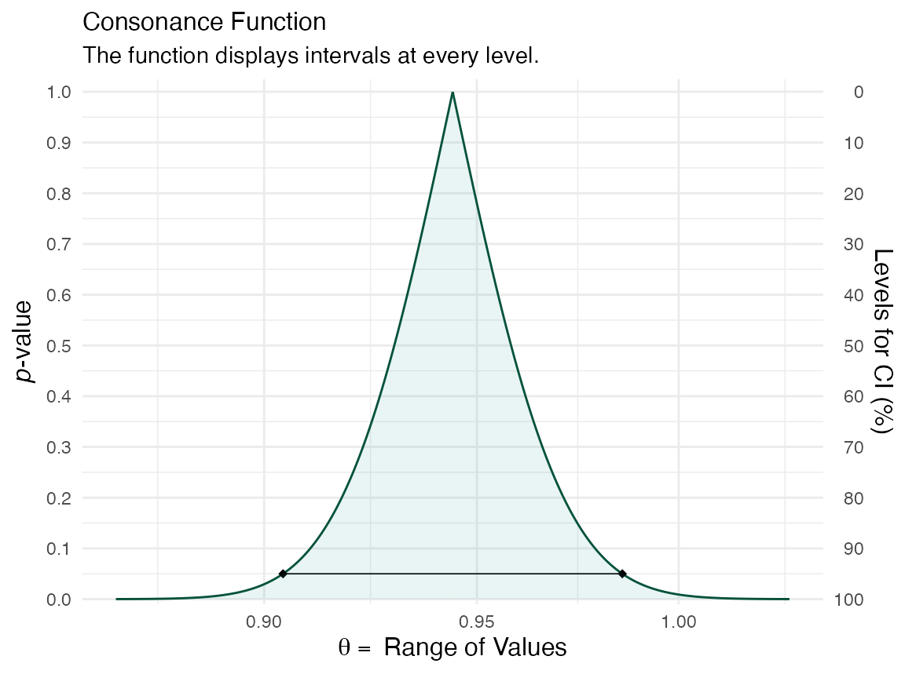
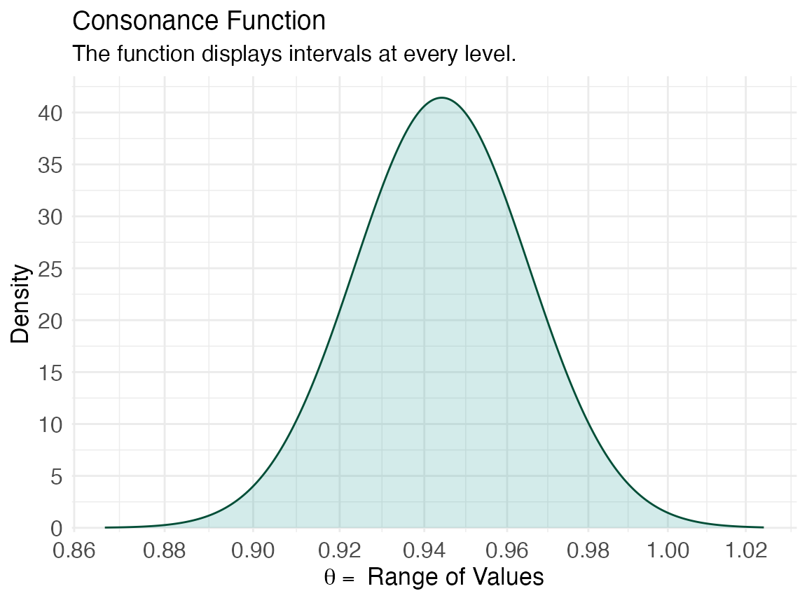

Here, we’ll look at how to create consonance functions from the coefficients of predictors of interest in a Cox regression model.
We’ll use the carData package for this. Fox
& Weisberg, 2018 describe the dataset elegantly in their
paper,
The Rossi data set in the
carDatapackage contains data from an experimental study of recidivism of 432 male prisoners, who were observed for a year after being released from prison (Rossi et al., 1980). The following variables are included in the data; the variable names are those used by Allison (1995), from whom this example and variable descriptions are adapted:week: week of first arrest after release, or censoring time.
arrest: the event indicator, equal to 1 for those arrested during the period of the study and 0 for those who were not arrested.
fin: a factor, with levels “yes” if the individual received financial aid after release from prison, and “no” if he did not; financial aid was a randomly assigned factor manipulated by the researchers.
age: in years at the time of release.
race: a factor with levels “black” and “other”.
wexp: a factor with levels “yes” if the individual had full-time work experience prior to incarceration and “no” if he did not.
mar: a factor with levels “married” if the individual was married at the time of release and “not married” if he was not.
paro: a factor coded “yes” if the individual was released on parole and “no” if he was not.
prio: number of prior convictions.
educ: education, a categorical variable coded numerically, with codes 2 (grade 6 or less), 3 (grades 6 through 9), 4 (grades 10 and 11), 5 (grade 12), or 6 (some post-secondary).
emp1–emp52: factors coded “yes” if the individual was employed in the corresponding week of the study and “no” otherwise.
We read the data file into a data frame, and print the first few cases (omitting the variables emp1 – emp52, which are in columns 11–62 of the data frame):
library(concurve)
#> Please see the documentation on https://data.lesslikely.com/concurve/ or by typing `help(concurve)`
library(carData)
Rossi[1:5, 1:10]
#> week arrest fin age race wexp mar paro prio educ
#> 1 20 1 no 27 black no not married yes 3 3
#> 2 17 1 no 18 black no not married yes 8 4
#> 3 25 1 no 19 other yes not married yes 13 3
#> 4 52 0 yes 23 black yes married yes 1 5
#> 5 52 0 no 19 other yes not married yes 3 3Thus, for example, the first individual was arrested in week 20 of the study, while the fourth individual was never rearrested, and hence has a censoring time of 52. Following Allison, a Cox regression of time to rearrest on the time-constant covariates is specified as follows:
library(survival)
mod.allison <- coxph(Surv(week, arrest) ~
fin + age + race + wexp + mar + paro + prio,
data = Rossi
)
mod.allison
#> Call:
#> coxph(formula = Surv(week, arrest) ~ fin + age + race + wexp +
#> mar + paro + prio, data = Rossi)
#>
#> coef exp(coef) se(coef) z p
#> finyes -0.37942 0.68426 0.19138 -1.983 0.04742
#> age -0.05744 0.94418 0.02200 -2.611 0.00903
#> raceother -0.31390 0.73059 0.30799 -1.019 0.30812
#> wexpyes -0.14980 0.86088 0.21222 -0.706 0.48029
#> marnot married 0.43370 1.54296 0.38187 1.136 0.25606
#> paroyes -0.08487 0.91863 0.19576 -0.434 0.66461
#> prio 0.09150 1.09581 0.02865 3.194 0.00140
#>
#> Likelihood ratio test=33.27 on 7 df, p=2.362e-05
#> n= 432, number of events= 114Now that we have our Cox model object, we can use the
curve_surv() function to create the function.
If we wanted to create a function for the coefficient of prior convictions, then we’d do so like this:
z <- curve_surv(mod.allison, "prio")Then we could plot our consonance curve and density and also produce
a table of relevant statistics. Because we’re working with ratios, we’ll
set the measure argument in ggcurve() to
“ratio”.
ggcurve(z[[1]], measure = "ratio", nullvalue = TRUE)
#> Warning: Using `size` aesthetic for lines was deprecated in ggplot2 3.4.0.
#> ℹ Please use `linewidth` instead.
#> ℹ The deprecated feature was likely used in the concurve package.
#> Please report the issue at <https://github.com/zadrafi/concurve/issues>.
#> This warning is displayed once per session.
#> Call `lifecycle::last_lifecycle_warnings()` to see where this warning was
#> generated.
ggcurve(z[[2]], type = "cd", measure = "ratio", nullvalue = TRUE)
curve_table(z[[1]], format = "image")Lower Limit |
Upper Limit |
Interval Width |
Interval Level (%) |
CDF |
P-value |
S-value (bits) |
|---|---|---|---|---|---|---|
1.086 |
1.106 |
0.020 |
25.0 |
0.625 |
0.750 |
0.415 |
1.075 |
1.117 |
0.042 |
50.0 |
0.750 |
0.500 |
1.000 |
1.060 |
1.133 |
0.072 |
75.0 |
0.875 |
0.250 |
2.000 |
1.056 |
1.137 |
0.080 |
80.0 |
0.900 |
0.200 |
2.322 |
1.052 |
1.142 |
0.090 |
85.0 |
0.925 |
0.150 |
2.737 |
1.045 |
1.149 |
0.103 |
90.0 |
0.950 |
0.100 |
3.322 |
1.036 |
1.159 |
0.123 |
95.0 |
0.975 |
0.050 |
4.322 |
1.028 |
1.168 |
0.141 |
97.5 |
0.988 |
0.025 |
5.322 |
1.018 |
1.180 |
0.162 |
99.0 |
0.995 |
0.010 |
6.644 |
We could also construct a function for another predictor such as age
x <- curve_surv(mod.allison, "age")
ggcurve(x[[1]], measure = "ratio")
ggcurve(x[[2]], type = "cd", measure = "ratio")
curve_table(x[[1]], format = "image")Lower Limit |
Upper Limit |
Interval Width |
Interval Level (%) |
CDF |
P-value |
S-value (bits) |
|---|---|---|---|---|---|---|
0.938 |
0.951 |
0.013 |
25.0 |
0.625 |
0.750 |
0.415 |
0.930 |
0.958 |
0.028 |
50.0 |
0.750 |
0.500 |
1.000 |
0.921 |
0.968 |
0.048 |
75.0 |
0.875 |
0.250 |
2.000 |
0.918 |
0.971 |
0.053 |
80.0 |
0.900 |
0.200 |
2.322 |
0.915 |
0.975 |
0.060 |
85.0 |
0.925 |
0.150 |
2.737 |
0.911 |
0.979 |
0.068 |
90.0 |
0.950 |
0.100 |
3.322 |
0.904 |
0.986 |
0.081 |
95.0 |
0.975 |
0.050 |
4.322 |
0.899 |
0.992 |
0.093 |
97.5 |
0.988 |
0.025 |
5.322 |
0.892 |
0.999 |
0.107 |
99.0 |
0.995 |
0.010 |
6.644 |
That’s a very quick look at creating functions from Cox regression models.
Cite R Packages
Please remember to cite the packages that you use.
citation("concurve")
#> To cite package 'concurve' in publications use:
#>
#> Rafi Z, Vigotsky A (2026). _concurve: Computes and Plots
#> Compatibility (Confidence) Intervals, P-Values, S-Values, &
#> Likelihood Intervals to Form Consonance, Surprisal, & Likelihood
#> Functions_. R package version 3.0.0,
#> <https://CRAN.R-project.org/package=concurve>.
#>
#> Rafi Z, Greenland S (2020). "Semantic and Cognitive Tools to Aid
#> Statistical Science: Replace Confidence and Significance by
#> Compatibility and Surprise." _BMC Medical Research Methodology_,
#> *20*, 244. ISSN 1471-2288, doi:10.1186/s12874-020-01105-9
#> <https://doi.org/10.1186/s12874-020-01105-9>,
#> <https://doi.org/10.1186/s12874-020-01105-9>.
#>
#> To see these entries in BibTeX format, use 'print(<citation>,
#> bibtex=TRUE)', 'toBibtex(.)', or set
#> 'options(citation.bibtex.max=999)'.
citation("survival")
#> To cite package 'survival' in publications use:
#>
#> Therneau T (2026). _A Package for Survival Analysis in R_. R package
#> version 3.8-6, <https://CRAN.R-project.org/package=survival>.
#>
#> Terry M. Therneau, Patricia M. Grambsch (2000). _Modeling Survival
#> Data: Extending the Cox Model_. Springer, New York. ISBN
#> 0-387-98784-3.
#>
#> To see these entries in BibTeX format, use 'print(<citation>,
#> bibtex=TRUE)', 'toBibtex(.)', or set
#> 'options(citation.bibtex.max=999)'.
citation("carData")
#> To cite package 'carData' in publications use:
#>
#> Fox J, Weisberg S, Price B (2022). _carData: Companion to Applied
#> Regression Data Sets_. doi:10.32614/CRAN.package.carData
#> <https://doi.org/10.32614/CRAN.package.carData>, R package version
#> 3.0-5, <https://CRAN.R-project.org/package=carData>.
#>
#> A BibTeX entry for LaTeX users is
#>
#> @Manual{,
#> title = {carData: Companion to Applied Regression Data Sets},
#> author = {John Fox and Sanford Weisberg and Brad Price},
#> year = {2022},
#> note = {R package version 3.0-5},
#> url = {https://CRAN.R-project.org/package=carData},
#> doi = {10.32614/CRAN.package.carData},
#> }
citation("survminer")
#> To cite package 'survminer' in publications use:
#>
#> Kassambara A, Kosinski M, Biecek P (2025). _survminer: Drawing
#> Survival Curves using 'ggplot2'_. doi:10.32614/CRAN.package.survminer
#> <https://doi.org/10.32614/CRAN.package.survminer>, R package version
#> 0.5.1, <https://CRAN.R-project.org/package=survminer>.
#>
#> A BibTeX entry for LaTeX users is
#>
#> @Manual{,
#> title = {survminer: Drawing Survival Curves using 'ggplot2'},
#> author = {Alboukadel Kassambara and Marcin Kosinski and Przemyslaw Biecek},
#> year = {2025},
#> note = {R package version 0.5.1},
#> url = {https://CRAN.R-project.org/package=survminer},
#> doi = {10.32614/CRAN.package.survminer},
#> }